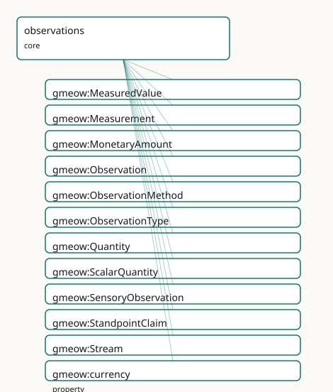

GMEOW Observations Module
- IRI: https://blackcatinformatics.ca/gmeow/slices/observations
- Tier: core
Group: core
What This Slice Covers
This slice owns 47 terms and contributes 104 mapping or projection rows. Use it when its terms match the native fact you want to preserve; use the linkage tables to see how those facts leave GMEOW for consumer vocabularies.
Dependencies
gmeow:slices/entitiesgmeow:slices/eventsgmeow:slices/kernelgmeow:slices/namesgmeow:slices/placesgmeow:slices/temporal
Consumers
- The unified observation stance: every measured, claimed, or sensed value in any slice; the claim layer.
Local Map

Examples
Temperature Reading
- Source:
slices/core/observations/examples/temperature-reading.ttl - GMEOW terms:
gmeow:Measurement,gmeow:Place,gmeow:ScalarQuantity,gmeow:SoftwareAgent,gmeow:hasUnit,gmeow:methodInstrumentalReading,gmeow:name,gmeow:observationMethod,gmeow:observationResult,gmeow:observedFeature - External prefixes:
xsd
# SPDX-FileCopyrightText: 2026 Blackcat Informatics® Inc. <paudley@blackcatinformatics.ca>
# SPDX-License-Identifier: CC-BY-4.0
#
# Worked example: a measurement is a reified Observation (, P11). A
# gmeow:Measurement records WHAT was observed (gmeow:observedFeature), HOW
# (gmeow:observationMethod), and from WHERE (gmeow:vantage — the sensor). Its
# result is NOT a bare number on the observation: the scalar lives in an
# entity-valued gmeow:ScalarQuantity wrapper that bundles the value with its UNIT
# and uncertainty, so a temperature is never asserted free-floating (P11 — every
# value carries its frame). The unit is aligned to QUDT by reference (P5).
@prefix gmeow: <https://blackcatinformatics.ca/gmeow/> .
@prefix ex: <https://blackcatinformatics.ca/gmeow/examples/observations/> .
@prefix xsd: <http://www.w3.org/2001/XMLSchema#> .
ex:sensor a gmeow:SoftwareAgent ; gmeow:name "Rack temperature sensor 7"@en .
ex:room a gmeow:Place ; gmeow:name "Server room A"@en .
# --- The measurement: observed feature, method, vantage, and an entity result.
ex:reading a gmeow:Measurement ;
gmeow:observedFeature ex:room ;
gmeow:observationMethod gmeow:methodInstrumentalReading ;
gmeow:vantage ex:sensor ;
gmeow:observationResult ex:temp .
# --- The result wrapper: value + unit + uncertainty, not a bare literal.
ex:temp a gmeow:ScalarQuantity ;
gmeow:quantityValue "22.5"^^xsd:decimal ;
gmeow:quantityUncertainty "0.1"^^xsd:decimal ;
gmeow:hasUnit <http://qudt.org/vocab/unit/DEG_C> .
Terms
Classes
| Term | Label | Definition |
|---|---|---|
gmeow:MeasuredValue |
Measured Value | An alias for gmeow:Quantity — the measured-value perspective on the same value×unit/frame×determinacy×provenance bundle. Equivalent to gmeow:Quantity and... |
gmeow:Measurement |
Measurement | An observation that assigns a quantitative or qualitative value to a feature of interest, typically carrying a unit, uncertainty, and determinacy model. The pa... |
gmeow:MonetaryAmount |
Monetary Amount | A quantity of money expressed as a decimal value in an explicit currency reference frame. The canonical superset of schema:MonetaryAmount and FIBO fibo-fnd-acc... |
gmeow:Observation |
Observation | A reified act of observing, measuring, or asserting a feature of interest — the universal claim construct unifying spatial measurement, temporal dating, sensor... |
gmeow:ObservationMethod |
Observation Method | The method or protocol by which an observation was made — a value vocabulary (individuals, never subclasses). Generalizes gmeow:DatingMethod (temporal module)... |
gmeow:ObservationType |
Observation Type | The kind of observation being made — a value vocabulary (individuals, never subclasses). Distinguishes measurement, sensory reading, standpoint claim, derived... |
gmeow:Quantity |
Quantity | A universal scalar numeric value bundled with unit/frame, determinacy, and provenance — the synthesis of FRAME-GEN + DET-GEN + OBS. Equivalent to gmeow:S... |
gmeow:ScalarQuantity |
Scalar Quantity | A scalar numeric value with a unit, determinacy model, and granularity — the entity-valued wrapper for literal observation results (temperatures, distances, co... |
gmeow:SensoryObservation |
Sensory Observation | An observation produced by a sensor or sensory apparatus reading a physical property of the environment. Specialises Observation with sensor-specific propertie... |
gmeow:StandpointClaim |
Standpoint Claim | An observation made from a specific standpoint or frame — an assertion, denial, or qualified position that a proposition holds. Realises the standpoint side of... |
gmeow:Stream |
Stream | A time-ordered sequence of observations or samples produced by a sensor or platform over a time interval. The ordering of samples is implicit via their individ... |
Properties
| Term | Label | Definition |
|---|---|---|
gmeow:currency |
currency | The currency reference frame in which this monetary amount is expressed. Functional: a MonetaryAmount is in exactly one currency frame. A subproperty of gmeow:... |
gmeow:facetSubject |
facet subject | The person an identity facet (gender identity, gender expression, sexual/romantic orientation) is about — the observedFeature of the claim. Domain is gmeow:Obs... |
gmeow:facetVantage |
facet vantage | The agent asserting an identity facet — the vantage of the claim. When gmeow:selfAsserted is true, the facetVantage is the person themselves (Principle 9: self... |
gmeow:hasStream |
has stream | Links an entity to a stream of observations or samples about it. Non-functional: an entity may have multiple co-existing streams from different platforms or se... |
gmeow:isResultOf |
is result of | Relates an entity (typically an observation result such as a quantity, coordinate set, or quality value) back to the Observation that produced it — the explici... |
gmeow:monetaryValue |
monetary value | The numeric value of a monetary amount as an xsd:decimal. Functional: a MonetaryAmount has exactly one numeric value. |
gmeow:observationEvent |
observation event | The event during which the observation was made — a survey, a census, an excavation, a clinical trial. Links an observation to the temporal occurrence that pro... |
gmeow:observationMethod |
observation method | The method or protocol used to produce the observation. Functional: one method per observation (compound protocols are modelled as a single fused method indivi... |
gmeow:observationResult |
observation result | The entity-valued result of an observation — a coordinate set, an instant, a quality value, a quantity, or another entity. For literal scalar readings (e.g. 22... |
gmeow:observationType |
observation type | The kind(s) of observation being made — measurement, sensory reading, standpoint claim, derived inference, etc. Non-functional: an observation may be both a me... |
gmeow:observedFeature |
observed feature | The individual whose property or state is being observed — the feature of interest. The range is intentionally open (owl:Thing) because anything can be observe... |
gmeow:quantityUncertainty |
quantity uncertainty | The uncertainty (e.g. ±1 sigma) of a scalar quantity, in the same unit as the quantity value. |
gmeow:quantityValue |
quantity value | The numeric value of a scalar quantity. |
gmeow:streamInterval |
stream interval | The time interval over which the stream was produced. Functional: the interval is constitutive of the stream's identity. |
gmeow:streamOf |
stream of | The entity whose observations the stream contains — the moving feature, device, or thing being tracked. Functional: a stream belongs to exactly one entity. |
gmeow:streamPlatform |
stream platform | The platform hosting the sensor(s) producing this stream — a vehicle, vessel, aircraft, buoy, or fixed station. Non-functional: a stream may migrate across pla... |
gmeow:streamSample |
stream sample | Links a stream to an individual observation, location state, or other entity composing it. Non-functional: a stream typically has many samples, and multiple sa... |
gmeow:streamSensor |
stream sensor | The specific sensor or agent producing the stream. Non-functional: multiple sensors may contribute to one stream, and competing sensor claims coexist (Principl... |
gmeow:vantage |
vantage | The agent or standpoint from which the observation is made — the reified-object-property counterpart of gmeow:accordingTo. Semantically, gmeow:vantage ⊑ gmeow:... |
Individuals
| Term | Label | Definition |
|---|---|---|
gmeow:methodComputationalModel |
computational model | Observation derived from a computational or mathematical model. |
gmeow:methodDirectObservation |
direct observation | Observation by unaided human perception. |
gmeow:methodExpertJudgement |
expert judgement | Observation based on expert assessment or consensus. |
gmeow:methodInstrumentalReading |
instrumental reading | Observation by a calibrated instrument or sensor. |
gmeow:methodRemoteSensing |
remote sensing | Observation from a distance, typically satellite or aerial imagery. |
gmeow:methodStreaming |
streaming | Collection via a continuous or periodic streaming protocol. |
gmeow:methodSurvey |
survey | A systematic survey or census procedure. |
gmeow:observationTypeDerived |
derived inference | An observation produced by inference, calculation, or machine learning from other observations. |
gmeow:observationTypeIdentity |
identity claim | An identity claim — gender identity, gender expression, sexual orientation, or romantic orientation — asserted by or about a person. |
gmeow:observationTypeKinship |
kinship claim | A claim about a kinship or genealogical relationship between persons. |
gmeow:observationTypeMeasurement |
measurement | A quantitative or qualitative measurement assigning a value to a feature. |
gmeow:observationTypeNaming |
naming claim | A claim about the appellation by which an entity is known in a given context. |
gmeow:observationTypeRights |
rights claim | A claim about the rights, permissions, prohibitions, or duties governing an entity. |
gmeow:observationTypeSensory |
sensory reading | A reading from a sensor or sensory apparatus. |
gmeow:observationTypeSimulation |
simulation output | An observation produced by computational simulation rather than direct measurement. |
gmeow:observationTypeStandpoint |
standpoint claim | An assertion made from a specific standpoint or frame. |
gmeow:observationTypeStreaming |
streaming | A streaming observation — a member of a time-ordered sequence produced by a sensor or platform. |
Linkages
- Rows: 104
- Projection profiles:
crmarchaeo,iptc,ivoa,loinc,qb,schema-org,sosa - External vocabularies:
bbc,crm,crmarc,crminf,fibo-fnd-acc-cur,iao,iptc,loinc,np,oa,obi,oboe,obscore,om,prov,qb,qudt,rdf,schema,snomed,sosa,sta,wd
| Source | Kind | Profile | Predicate/Relation | Target | Evidence |
|---|---|---|---|---|---|
gmeow:Measurement |
equivalence | - |
skos:closeMatch | sosa:Observation | gmeow-observations.sssom.tsv; gmeow:eqObs007; confidence 0.9 |
gmeow:MonetaryAmount |
equivalence | - |
skos:closeMatch | fibo-fnd-acc-cur:MonetaryAmount | gmeow-fibo.sssom.tsv; gmeow:eqFibo003; confidence 0.85 |
gmeow:MonetaryAmount |
equivalence | - |
skos:closeMatch | schema:MonetaryAmount | gmeow-schema-org-finance.sssom.tsv; gmeow:eqSchemaOrgFin003; confidence 0.85 |
gmeow:Observation |
equivalence | - |
skos:closeMatch | crm:E13_Attribute_Assignment | gmeow-observations.sssom.tsv; gmeow:eqObs012; confidence 0.9 |
gmeow:Observation |
equivalence | - |
skos:closeMatch | crmarc:S4_Observation | gmeow-observations.sssom.tsv; gmeow:eqObs061; confidence 0.85 |
gmeow:Observation |
equivalence | - |
skos:closeMatch | oboe:Observation | gmeow-observations.sssom.tsv; gmeow:eqObs057; confidence 0.85 |
gmeow:Observation |
equivalence | - |
skos:closeMatch | prov:Entity | gmeow-observations.sssom.tsv; gmeow:eqObs009; confidence 0.8 |
gmeow:Observation |
equivalence | - |
skos:closeMatch | sosa:Observation | gmeow-observations.sssom.tsv; gmeow:eqObs001; confidence 0.95 |
gmeow:Observation |
equivalence | - |
skos:broadMatch | sosa:Sampling | gmeow-observations.sssom.tsv; gmeow:eqObs030; confidence 0.8 |
gmeow:ObservationMethod |
equivalence | - |
skos:closeMatch | loinc:Method | gmeow-observations.sssom.tsv; gmeow:eqObs074; confidence 0.85 |
gmeow:ObservationMethod |
equivalence | - |
skos:closeMatch | sosa:Procedure | gmeow-observations.sssom.tsv; gmeow:eqObs006; confidence 0.85 |
gmeow:Quantity |
equivalence | - |
skos:closeMatch | qudt:QuantityValue | gmeow-qudt.sssom.tsv; gmeow:eqQudt004; confidence 0.85 |
gmeow:Quantity |
equivalence | - |
skos:closeMatch | sosa:Result | gmeow-observations.sssom.tsv; gmeow:eqObs019; confidence 0.7 |
gmeow:ScalarQuantity |
equivalence | - |
skos:relatedMatch | loinc:Quantity | gmeow-observations.sssom.tsv; gmeow:eqObs075; confidence 0.75 |
gmeow:ScalarQuantity |
equivalence | - |
skos:relatedMatch | obscore:observable | gmeow-observations.sssom.tsv; gmeow:eqObs067; confidence 0.7 |
gmeow:ScalarQuantity |
equivalence | - |
skos:relatedMatch | om:Measure | gmeow-observations.sssom.tsv; gmeow:eqObs040; confidence 0.7 |
gmeow:ScalarQuantity |
equivalence | - |
skos:closeMatch | sosa:Result | gmeow-observations.sssom.tsv; gmeow:eqObs008; confidence 0.7 |
gmeow:SensoryObservation |
equivalence | - |
skos:relatedMatch | loinc:LabTest | gmeow-observations.sssom.tsv; gmeow:eqObs072; confidence 0.8 |
gmeow:SensoryObservation |
equivalence | - |
skos:closeMatch | obscore:ObsDataset | gmeow-observations.sssom.tsv; gmeow:eqObs063; confidence 0.85 |
gmeow:SensoryObservation |
equivalence | - |
skos:closeMatch | qb:Observation | gmeow-observations.sssom.tsv; gmeow:eqObs054; confidence 0.75 |
gmeow:SensoryObservation |
equivalence | - |
skos:relatedMatch | snomed:404684003 | gmeow-observations.sssom.tsv; gmeow:eqObs077; confidence 0.75 |
gmeow:SensoryObservation |
equivalence | - |
skos:closeMatch | sosa:Observation | gmeow-sensory-environment.sssom.tsv; gmeow:eqSenv001; confidence 0.95 |
gmeow:StandpointClaim |
equivalence | - |
skos:relatedMatch | bbc:NewsEvent | gmeow-observations.sssom.tsv; gmeow:eqObs068; confidence 0.75 |
gmeow:StandpointClaim |
equivalence | - |
skos:closeMatch | crminf:I2_Belief | gmeow-ai.sssom.tsv; gmeow:eqAi002; confidence 0.7 |
| ... | ... | ... | ... | ... | 80 more rows |
Guide
Observations — the universal claim relator
Slice:
https://blackcatinformatics.ca/gmeow/slices/observations· tier: core One reified structure for every measured, sensed, claimed, or asserted value in the graph.
Most vocabularies scatter their claim machinery: SOSA for sensor readings, CIDOC E13 for
attribute assignments, bespoke relators for names, rights, and identities. GMEOW collapses
them into one structure — [Observation](../reference/classes/gmeow-Observation.md) ≡ [Measurement](../reference/classes/gmeow-Measurement.md) ≡ [Standpoint](../reference/classes/gmeow-Standpoint.md) ≡ [IdentityFacet](../reference/classes/gmeow-IdentityFacet.md) ≡
[NameUsage](../reference/classes/gmeow-NameUsage.md) ≡ [RightsStatement](../reference/classes/gmeow-RightsStatement.md) ≡ [KinRelationship](../reference/classes/gmeow-KinRelationship.md) (Principle 9: every vantage is a co-equal
facet; no frame is privileged). An observation is a reified gufo:Relator mediating a
vantage (who holds it), an observedFeature (what it is about), and an
observationResult (what was found). SOSA/SSN, PROV-O, and CIDOC E13 are aligned by
reference (Principle 5).
This slice is the Claim end of the claim spine (Source → Chunk → EvidenceSpan → Claim,
Principle 14): an LLM output, a sensor reading, and a census entry are all observations —
stored with a vantage, never adjudicated by rank. The slice is also home to the universal
Quantity/MeasuredValue construct (every scalar value travels as a
value × unit/frame × determinacy × provenance bundle, never a bare literal.
The core relator
gmeow:Observation
The universal claim construct: a gufo:Kind under gufo:Relator. EL-axiomatised to
mediate at least one vantage and one feature (open-world); the closed-world "exactly one"
cardinality is SHACL's concern (Principle 7). Competing observations of the same feature
coexist rather than collapse — disagreement is data.
gmeow:vantage
The agent or standpoint the observation is made from — the reified counterpart of the
gmeow:accordingTo annotation axis. The flat↔reified pairing is documented, not
axiomatised: accordingTo is an annotation property (keeping the OWL 2 DL downcast clean,
Principles 2–3), so vantage ⊑ accordingTo is realised in the projection layer. Range is
gmeow:Entity: a vantage may be a bare agent or a first-class Standpoint. Non-functional —
joint observations are valid.
gmeow:observedFeature
The feature of interest — deliberately owl:Thing-ranged, because anything can be
observed: a place, a person, a proposition, a quality value. Per-kind narrowing is SHACL's
job, not the open ontology's.
gmeow:observationResult · gmeow:isResultOf
The entity-valued result (a coordinate set, an instant, a quantity) and its inverse — the
explicit provenance leg of the bundle. Uniformly entity-valued: scalar literals
live on a ScalarQuantity, never directly on the observation. Non-functional: one
observation may yield results in several frames; one consensus result may flow from many
observations. A property chain (isResultOf ∘ hasReferenceFrame ⊑ hasReferenceFrame)
lets results inherit the observation's reference frame (Principle 11).
gmeow:observationMethod · gmeow:observationType
How it was done versus what kind of act it was — both open value vocabularies (individuals, never subclasses). Method is functional and constitutive: a different method is a different observation. Type is non-functional: a calibrated reading can be both measurement and derived inference. Seeds cover measurement, sensory, standpoint, derived, simulation, identity, naming, rights, kinship, and streaming.
gmeow:Measurement · gmeow:SensoryObservation · gmeow:StandpointClaim
The shared specialisation spine, declared here so every consumer slice (temporal, places,
sensory, standpoint) deepens the same parent. StandpointClaim is the assertion form:
vantage = the standpoint, observedFeature = the proposition, observationResult = the
modality (unequivocal, probable, conceivable, refuted) — the structure the deception and
falsehood doctrine builds on.
gmeow:facetSubject · gmeow:facetVantage
The bridge idiom: domain relators (IdentityFacet, NameUsage, RightsStatement,
VersionMembership) plug their role properties into the core roles via rdfs:subPropertyOf
(facetSubject ⊑ observedFeature, facetVantage ⊑ vantage, likewise usageNamer,
usageAppellation, statementAbout, membershipAuthority). A generic consumer asks "all
observations about Alice" and gets her names, rights, identities, and coordinates without
knowing any domain vocabulary. When gmeow:selfAsserted is true, the facetVantage is the
person themselves — self-assertion is top authority (Principle 9).
Streams and scalar results
gmeow:Stream
A time-ordered observation sequence — streamOf exactly one tracked entity,
composed via streamSample, hosted on a streamPlatform, produced by a streamSensor
over a streamInterval. Ordering is implicit in sample timestamps, never an asserted list
(Principle 12); deriving a continuous trajectory from the stream is the solver's job.
gmeow:Quantity · gmeow:ScalarQuantity · gmeow:MeasuredValue
Three equivalent names for one construct — the domain-neutral scalar bundle:
gmeow:quantityValue (+ gmeow:quantityUncertainty) for the number, hasUnit /
hasReferenceFrame for the frame (Principle 11), hasDeterminacy for ontic vagueness,
isResultOf for provenance. Temperatures, counts, probabilities, masses — all of them,
one shape.
gmeow:MonetaryAmount
Promoted to core in the dependency surgery: money is frame-relative quantity
machinery, not finance-domain. gmeow:monetaryValue carries the decimal;
gmeow:currency (⊑ hasReferenceFrame, functional) names the currency frame — a value
without its currency is ill-formed (Principle 11). Canonical superset of
schema:MonetaryAmount and the FIBO monetary amount.
Solver boundary & alignment
Aggregation, calibration, consensus derivation, trajectory reconstruction, and inter-frame conversion are computations, never assertions (Principle 12): the slice records co-existing observations; the solver layer ranks, fuses, or projects them per consumer policy. Suppressing a contested observation is projection-time filtering, never erasure (Principle 10).
Dependencies
Depends on kernel, entities, events, names, places, and temporal. Consumed by
every slice that measures, claims, or senses anything — which is to say, by every slice;
the AI claim layer is its flagship consumer.